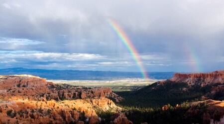

Introduction
A national park is a natural park in use for conservation purposes, created and protected by national governments. Often it is a reserve of natural,
semi-natural, or developed land that a sovereign state declares or owns. Although individual nations designate their own national parks differently
,there is a common idea: the conservation of 'wild nature' for posterity and as a symbol of national pride.

An international organization, the International Union for Conservation of Nature (IUCN), and its World Commission on Protected Areas
(WCPA), has defined National Park as its Category II type of protected areas.
According to the IUCN, 6,555 national parks worldwide met its criteria
in 2006. IUCN is still discussing the parameters of defining a national park.
In 1969, the IUCN declared a national park to be a relatively large area with the following defining characteristics
One or several ecosystems not materially altered by human exploitation and occupation, where plant and animal species, geomorphological
sites and habitats are of special scientific, educational, and recreational interest or which contain a natural landscape of great beauty.
Highest competent authority of the country has taken steps to prevent or eliminate exploitation or occupation as soon as possible in the
whole area and to effectively enforce the respect of ecological, geomorphological, or aesthetic features which have led to its establishment.
The Visitors are allowed to enter, under special conditions, for inspirational, educative, cultural, and recreative purposes.
IN 1971 THESE CRITERIA WERE FURTHER EXPANDED UPON LEADING TO MORE CLEAR AND DEFINED BENCHMARK TO EVALUTE A NATIONAL PARK. THESE INCLUDES
1)Minimum size of 1,000 hectares within zones in which protection of nature takes precedence
2)Statutory legal protection
3)Budget and staff sufficient to provide sufficient effective protection
4)Prohibition of exploitation of natural resources (including the development of dams) qualified by such activities as sport, hunting, fishing, the need
for management, facilities, etc.
NATIONAL PARK SERVICES
The world's first national park service was established May 19, 1911, in Canada.
The Dominion Forest Reserves and Parks Act placed the dominion parks under the
administration of the Dominion Park Branch (now Parks Canada), within the Department
of the Interior. The branch was established to "protect sites of natural wonder" to provide
a recreational experience, centred on the idea of the natural world providing rest and spiritual renewal from
the urban setting.Canada now has the largest protected area in the world with 450,000 km2 of national park space.